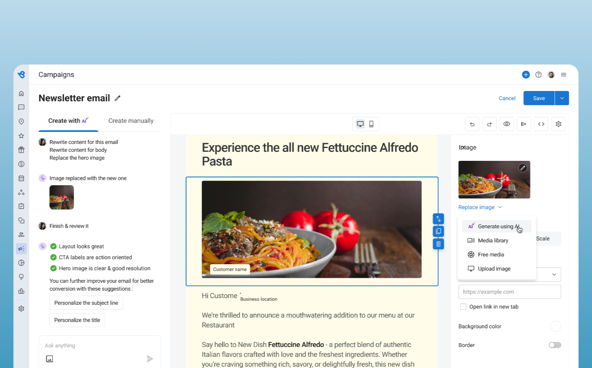

Projects
I lead product design across complex SaaS platforms, partnering with executives, product leaders, and engineering organizations to drive customer adoption, operational efficiency, and long-term business value. Over 10+ years building products across analytics, AI, reputation management, and enterprise workflows.
Associated with
Projects

Building & Managing a Chatbot Ecosystem for Career Sites

Driving Product Simplification & Adoption Post-Acquisition

From UI refresh to enterprise product transformation

Competitor Experience for Mid-Market & Enterprise

Designing the Paid AI Flagship — Conference Launch

Designing an End-to-End Marketing Automation Suite
Leadership Impact
Led initiatives spanning Product, Design, Engineering, Data, and GTM, building alignment across competing priorities.
Influenced strategic product decisions beyond design deliverables, connecting customer needs with revenue and retention goals. Helped scale Phenom's chatbot unit from zero to $10M revenue; current work targets $5M ARR by Q4 2026.
Built scalable design processes, frameworks for prioritization, and decision-making systems that outlast individual projects.
Mentored designers, raised design quality across teams, and established a culture of customer-centered decision-making.
Side Project
Validates content design against style guides automatically — checks copy consistency across text layers, flags violations, and explores component-type auto-detection. Built with Deno. Demonstrates AI-era tooling initiative beyond day-to-day design work.
[TODO(AKHIL): add plugin link when public]What colleagues say
"I worked closely with Akhil for several years across multiple products at Phenom. He is a versatile, diligent and detail-oriented designer who works until he clearly understands the user and their goals. I cannot recommend Akhil highly enough."
"I enjoyed working with Akhil. His insight, user focus, and attention to detail played a critical role in helping to identify user problems and design corresponding solutions."
"I worked with Akhil on the product, he has well-articulated communication skill and design thinking. He is always keen to learn new skills and curious about design world. There is so much I have learned from him during our live project."
Design leader blending creative intuition with strategic clarity. I lead teams that build user-centered, business-aligned experiences across B2B and B2C domains. Always learning, always designing, driven by curiosity and love for art and storytelling.
Download PDFExperience
Leading product design across Birdeye's core platform, serving 100,000+ business customers. Responsible for design strategy, team growth, and delivering cohesive, intuitive experiences across multiple product lines. Recognised with the Bar Raiser 2025 award, given to the top 1% of performers across the company.
Over six years at Phenom, I grew from individual contributor to people manager, owning design for the Chatbot and Scheduling products while helping scale the chatbot business unit from zero to $10M in revenue. The products reached 100k+ users weekly across enterprise clients globally.
Education
Open to senior design leadership roles, advisory work, and conversations about scaling design in SaaS. Always happy to connect.
📆 Case Study · Phenom People
Driving product simplification and adoption post-acquisition. How we closed a critical gap in Phenom's ecosystem and made scheduling interviews feel as easy as sending a calendar invite.
I was the UX Lead — owning research, flows, and the post-acquisition simplification, supported by one UX designer and one UI designer.

Phenom CRM was feature-rich, capturing qualified leads from career sites, targeting and sending email & SMS campaigns, keeping records of candidate profiles, tracking activities and much more.
On a competitive analysis among all of Phenom's customers, we figured out that one of the prominent gaps in the Phenom ecosystem was that there was no easy way to schedule interviews with candidates. Recruiters needed to go back and forth between candidates and interviewers to finalise a time slot.
I looked at scheduling solutions across the industry to understand prevailing design patterns and the emerging trend of candidate-first scheduling, where the end user chooses when the interview can happen.

Design a scheduling solution within the CRM product so that users don't need to depend on any external tool. Built around three core value propositions:
Common overlapping free slots from interviewers' calendars are surfaced to candidates, who pick what works for them.
If no slot works, candidates can propose an alternative time for the recruiter to review.
Candidates can cancel or reschedule their interviews easily as per their convenience.

Phenom acquired MyAlly, a scheduling platform with AI capabilities for responding to candidate queries via email, adding new capabilities to incorporate into our solution.
The version of our solution post-acquisition didn't fit into our customers' workflows. There was barely any adoption. We conducted research with 5 employees from different customer organisations to investigate.
After the usability testing, we set out to design a simplified version of scheduling, one that reduced technical complexity, gave recruiters better visibility, and made the candidate experience completely glitch-free. The screens below walk through the recruiter and candidate journeys end to end.
Template selector / Create from scratch: recruiters choose an existing scheduling template or start a new invite from scratch, reducing setup time for common interview types.

Options on 'Create new Invite': recruiters select the interview format (phone, video, on-site) and set key parameters before configuring details.

Configuring the details: interviewers, time slots, room booking, and notes are configured in one place. Slot availability is pulled from calendar integrations automatically.

Invite preview: before sending, recruiters see exactly how the invitation will appear to the candidate. This was a key request from usability testing participants.

Candidate invite: the email received by the candidate, clearly explaining the next steps and linking to a slot selection experience optimised for mobile.

Candidate slot preference selection: candidates pick their preferred interview time from a clean calendar view. No login required, a key improvement to the candidate experience.

Candidate interview confirmation: booking confirmed with full details: interviewer name, time, format, and calendar links. Reschedule and cancel options are available here.
Once we designed the simplified version, we wanted to make sure it aligned with customer goals. We conducted usability testing with 6 recruiters.
Usability testing with 6 recruiters confirmed the simplified redesign addressed all 4 pain points identified in research. All issues found were minor and easily fixable — a strong signal the approach was on the right track.
One of the major learnings was the need to build conviction early about how the product would be built. Our assumption was that MyAlly was already an established solution we could simply incorporate. This backfired badly.
Being on the ground during the acquisition into Phenom meant witnessing a lot of chaos, lack of direction and product clarity. Fighting through all of that to build something good was invaluable.
After the initial failure, usability testing became extremely crucial to get early validation. Without it, the entire product can become a very expensive affair.
📊 Case Study · Birdeye
From UI refresh to enterprise product transformation. Redesigning Birdeye's Insights module from the ground up to give enterprise customers actionable visibility into their brand performance.
I led the design effort as Sr. Manager — driving the revamp-vs-refresh decision, running the four executive review cycles, and directing the lead designer on the Experience Score system.

Birdeye had an existing Insights module, but its approach to showing brand sentiment was very limited. The current approach was not enough to offer better value to customers or convince them to choose Birdeye over competitors like Sprinklr and Reputation.
The core question the team faced early: is this a UI revamp or a full product revamp? After exhaustive competitive analysis, the team made a compelling case to do a full product revamp to stand out as a strong alternative for enterprise online reputation management.
"Give our customers a consolidated view of what is not working out for them and what actions they need to take for their location, region and brand."
Imagine an enterprise customer like Dominos, who wants to know what people say about their pizza, delivery, ambience, pricing and quality; how they compare against industry averages; and whether all their locations are correctly listed on Google, Zomato, Yext, Apple and more. This is what Insights 2.0 solves.
Sprinklr and Reputation are the primary competitors in the online reputation management space. The goal was to simplify understanding of a customer's brand in the same way these companies do, with a simpler, more actionable UX.

This project was nearly a ground-up rebuild and required significant justification for why the product needed to exist in a new form. The project underwent at least 4 full end-to-end version reviews, taking stakeholder feedback each time to get to a cleaner, more understandable format. All versions were validated with executive leadership, customer feedback sessions, and incorporated incrementally.


The final design introduces the Experience Score, a single composite metric that gives enterprise customers an immediate read on their overall brand health. It breaks into three sub-scores (Sentiment, Presence, Reputation), each with rich drill-downs by location, category, and time period.
Experience Score dashboard: the top-level view showing an enterprise customer's overall brand health score across all locations, with a breakdown bubble chart and trend over time.

Sentiment score: a numeric value representing the sentiment across reviews and surveys of the business, drilled down by location and category (food, service, ambience, etc.).

Category breakdown: sentiment sliced by topic category, helping enterprise customers pinpoint exactly what's driving positive or negative perception across their brand.

Location drill-down: performance of individual locations within the brand, enabling area managers to identify outliers and take targeted action.

Sentiment detail view: trending topics and AI-extracted themes from reviews and surveys, giving context behind the score movement over any time period.

Presence score: knowing whether all locations are listed accurately across directories and whether keywords are ranking highly as per SEO, visualised at the brand and location level.

Reputation score: a numeric value derived from average rating, review count, and review response rate. Shown alongside trend data so customers can track the impact of their reputation management efforts.
Alongside the design revamp, the team developed new ways of crunching data. The core concept: an 'Experience Score', a single metric telling an enterprise customer how their overall brand is performing across all locations. It breaks down into three sub-scores:
A numeric value representing sentiment across reviews and surveys, drilled down by location and category.
Whether all locations are listed accurately and keywords are ranking highly as per SEO.
A numeric value derived from average rating, review count and review response rate.
Multiple data visualisations were built: bubble charts, treemaps, and radial views so customers can get different angles on the same data. Each score links to a detailed drill-down by location, category, and time period, nudging users toward concrete action.

Bubble chart: plots each location's score across two dimensions, making outliers and patterns immediately visible.

Treemap: surfaces relative volume and performance across locations in a single glance.
Prototype versions were shown to customers active in Birdeye's beta programs. The feedback was largely positive:
The Insights 2.0 redesign substantiates the "0 to $5M" badge on the homepage.
Beta feedback from real customers was strongly positive: the revised product was described as "visually impressive" and as giving "a lot more visibility into areas our staff would need to work on."
This started as a UI revamp. Conversations with customer success managers revealed that a visual update alone wouldn't solve the underlying user need.
Users and decision makers have different expectations. Executive input is critical to understand what buyers need from a product, not just what end-users want.
Customers switching from other tools need the learning curve to be as flat as possible. Feature parity lowers the barrier to adoption and transition.
Developers are partners, not just implementers. Including key dev leads in feedback phases surfaces API, frontend and backend constraints early, and finding a healthy tradeoff is always the goal.
📈 Case Study · Birdeye
Re-imagining the competitor experience for Birdeye, offering better value proposition to mid-market and enterprise customers through smarter setup, richer data visualisation, and deeper integration across Insights, Reviews, and Social.
I led design strategy across the four workstreams (Setup, Insights, Reviews, Social), coordinating three lead designers and aligning three PM tracks on a single competitive-intelligence pattern.

Birdeye had an existing competitor module, but it had lower engagement and sales compared to other products. The existing product was a single-page layout with dial UI for each competitor's review sentiment and star rating: data rich, but not easily consumable.
On the competitor setup front, the process was tedious and manual, which further impacted adoption. With the recent build of the Insights module and the push of AI across the industry, the opportunity was clear: enhance the competitor module experience within Insights and sell them as a single, higher-value package.
"To re-imagine the competitor experience for Birdeye, offering better value proposition to mid-market and enterprise customers."
Design inspiration was drawn from Sprout Social, Yext, and Podium to understand best-in-class patterns for surfacing competitive intelligence.


Competitors fetched automatically via GBP APIs based on customer location. Enabled by default. Brand and location views available.
Competitor data flows into the Insights module, with comparative scores, SWOT-style visualisations, strengths & weaknesses, trends over time.
Competitor grid view, leaderboard by source, and head-to-head review comparisons across multiple listing sites.
Competitor Setup: GBP APIs pull competitor location, review sites, ratings, and social links automatically, though users can also add competitors manually. Both brand and location views are available, displayed alongside a map.
Insights: Competitor data flows into a Benchmarking section showing AI-generated summaries, Birdeye score comparisons, reputation and sentiment scores side-by-side, a scatter-plot bubble chart for visual ranking, and bar charts for sentiment scores by category across all competitors.
Strengths & Weaknesses: A SWOT-style view compares the customer's brand vs each competitor, showing areas each side is winning or losing, with AI-generated narrative summaries.
Reviews module: Customers compare their reviews with competitors across multiple listing sites, via a competitor grid (satisfaction vs market presence), a leaderboard by source (Google, Healthgrades, Doctors.com etc.), and head-to-head comparison views. A similar pattern is followed in the Social module for cross-channel follower and growth comparisons.


After a week of brainstorming, the team put together a high-level flow covering setup, insights, reviews, and social. Competitors are fetched automatically on the basis of the customer's location using Google Business Profile APIs, and enabled by default, removing the friction of manual configuration that plagued the previous version.

Solution flow: the high-level flow covering the four areas of the redesigned competitor experience: setup, Insights module, Reviews module, and Social module.
Brand view: all competitors shown at the brand level, with aggregate scores and a map view. Customers get a bird's-eye read on how their brand stacks up before drilling into locations.

Location view: competitor performance broken down by individual location, helping multi-location businesses identify which of their sites are most exposed to local competition.

Enabling competitors: competitors are auto-populated via GBP APIs and enabled by default. Customers can also add competitors manually, giving full control without the tedious manual-only setup of the previous version.

Competitor details: review sites, ratings, social links, and contact information pulled from multiple data sources, giving a comprehensive profile for each competitor.
Competitor data flows directly into the Insights module, giving customers AI-generated summaries, Birdeye score comparisons, a bubble chart plotting each competitor's reputation and sentiment rank, a SWOT-style strengths and weaknesses breakdown, and reviews & ratings trends over time across all competitors.

Comparative scores & AI summaries: side-by-side Birdeye score comparison across all active competitors, with AI-generated narrative summaries highlighting the key differences.

Bubble chart: reputation vs. sentiment rank: a graphical visualisation plotting each competitor's location and rank for reputation and sentiment scores. Customers immediately see who's winning and where they sit in the competitive landscape.

Strengths & Weaknesses: a SWOT-inspired view modelled on competitive analysis frameworks, comparing the customer's brand vs each competitor across key dimensions with AI-generated narrative summaries for each.

Reviews & ratings over time: trend data across all competitors so customers can track whether their performance is improving relative to the market, not just in absolute terms.
In the Reviews module, customers compare their review performance against competitors across multiple listing sites, via a competitor grid (satisfaction vs market presence), a leaderboard by source (Google, Healthgrades, Doctors.com), and head-to-head comparison views.

Competitor grid view: satisfaction vs market presence plotted for each competitor, giving customers an immediate visual of where they stand across the competitive landscape in terms of review volume and quality.

Leaderboard by source: competitors ranked by review performance per listing site (Google, Healthgrades, Doctors.com etc.), showing which platforms each competitor is winning on and where the customer has an opportunity to close the gap.

Social module: customers compare brand performance across multiple social channels (followers, growth, engagement) against competitors. The same competitive intelligence pattern from Reviews is carried through to Social, giving a consistent experience across the platform.
The redesigned module removed the primary friction point of manual competitor setup by auto-fetching competitors via GBP APIs and enabling them by default, directly addressing the low-adoption issue of the previous version.
The business case was packaging Competitors with Insights as one higher-value SKU — so the hardest design work was the seams: making competitor data feel native inside Insights, Reviews, and Social rather than bolted on.
Auto-fetching competitors via GBP APIs and enabling them by default removed the setup friction that killed the previous version's adoption. Asking users to configure first is asking them to churn first.
Repeating a single competitive-intelligence pattern across Setup, Insights, Reviews, and Social cut the learning curve and the engineering cost simultaneously.
💬 Case Study · Phenom People
Two connected products: a candidate-facing chatbot that converts career site visitors into quality leads, and the management platform built to let customers configure and own it themselves, without ever filing a support ticket.
I was the UX Lead for both the candidate-facing bot and the management platform, owning conversational UX strategy and the self-service product direction.

Phenom's core product was personalised career sites. But on those sites, web traffic was frequently not converting into leads; contact details and names weren't being captured. Only around 15% of traffic was converting as leads.
The solution needed to feel approachable, provide genuine value to the candidate, and capture leads in the process, at a time when chatbots were trending and many startups were entering this space.
Answer common candidate questions about benefits, culture, and leadership, eliminating the need for call centres and saving recruiter time.
Nudge candidates to share minimal info, including job category, title, location, and experience, to surface relevant openings immediately.
Capture name, email, and phone number as a natural outcome of helping candidates, a win-win for both sides.
Offer related jobs by title and location when primary results are exhausted, ensuring every visit is maximally useful.
When no suitable jobs exist today, candidates can set up email alerts to keep them in the pipeline for future roles.

The chatbot was continuously tweaked based on data and insights. The screens below represent the most recent design iteration.
The bot initially sat passively on the career site, resulting in just 0.02% usage. Adding a proactive pop-up pushed this to up to 7% of web traffic. Adding sounds gave a marginal further boost, though required careful tuning.
Once the bot had sound and auto-pop behaviour on every page, candidates found it annoying as they scanned through jobs. Conditional triggering rules had to be introduced to limit the behaviour.
Early versions asked for personal details before showing jobs. Flipping the flow to show jobs first and collect leads only after expressing interest, despite expectations of a dip, actually increased the number of leads and produced higher-quality ones.
As a growing B2B company, the goal was to satisfy customers while keeping the team focused on roadmap priorities. Building self-service tools gives customers the flexibility to make changes on their own timeline, reducing onboarding time, eliminating support tickets, and resulting in happier customers who feel genuinely in control.
After building the chatbot, there was no way for customers to manage it themselves. Every change, whether styling, interactions, or FAQs, required the implementation or development team. Without an interface, adding FAQs alone could take more than 3 weeks, as talent marketers needed time to compile question-answer pairs.
This increased onboarding time, left candidates unserviced, and wasted both customer and internal productive time. The solution: a self-service management platform.

The FAQ section lets customers create and manage question-answer pairs the bot should know. Key design considerations: easy navigation between questions, a recommended answer character limit (soft, not enforced), support for training phrases, and confidence score visibility per FAQ.
When a candidate asks a question, the system tries to match it to an FAQ with 80%+ confidence. Below that threshold, the bot gives a fallback answer and logs the query. Knowledge gaps shows aggregated patterns with severity and frequency. Unanswered Questions shows individual queries alongside the full candidate conversation, allowing recruiters to reply directly or link the query to an existing FAQ.
Customers can configure the bot's avatar, name, brand colours, and interactions, with a live preview panel so changes are seen instantly before publishing.
The chatbot was continuously refined based on live data. The screens below represent the final design iteration, from the proactive pop-up through to job results and lead capture.
Chatbot pop-up: proactively greets career site visitors with quick-reply options. This single change (from passive to proactive) pushed engagement from 0.02% to up to 7% of web traffic.

Job search flow: conversational questions guide the candidate through job category, title, location, and experience level to surface the most relevant openings with minimal friction.

Showing matched jobs: roles presented as swipeable cards with title, location, and proximity. Lead capture (name, email, phone) happens only after a candidate expresses interest, following the "give first, then ask" principle that actually increased both lead volume and quality.

FAQ answers: the bot handles company questions (culture, benefits, leadership) with rich responses including text, images, and video embeds, eliminating the need for call centres and saving recruiter time.
The management platform is built around three modules: FAQs (what the bot knows), Knowledge Gaps (what it doesn't know but should), and Settings (how the bot looks and behaves). Crucially, everything is self-service, with no engineering involvement needed after initial setup.

FAQ section: question-answer pairs with status (published, draft, pending), topic tags, and a confidence score bar per FAQ. The cut-off for the bot to confidently answer is 80%; below that, it falls back and logs the query.

Search behaviour: how recruiters search and browse within the knowledge base to quickly locate, update, or review specific FAQs without scrolling through hundreds of entries.

Filters: filtering the FAQ list by topic, status, and confidence level so talent marketers can triage what needs attention without being overwhelmed by the full list.

FAQ sidepanel: editing a specific FAQ with fields for the primary question, training phrases (alternate phrasings the bot should recognise), answer text with a recommended character limit, and a preview of the bot response.

Knowledge Gaps & Unanswered Questions: aggregated patterns of questions the bot couldn't answer, ranked by severity and frequency. Individual unanswered queries are shown alongside the full candidate conversation, allowing recruiters to reply directly or link the query to an existing FAQ to close the gap.

Settings & bot profile: customers configure the bot's avatar, name, brand colours, interaction delays, and pop-up behaviour, all with a live preview pane so changes are visible before publishing. No support ticket needed.
The self-service Management Platform was designed to eliminate support-ticket-driven onboarding.
📣 Case Study · Birdeye
Designing an end-to-end marketing automation suite that empowers talent marketers to enrich contacts, map relationships, build campaigns, and orchestrate workflows, all without engineering support.
I lead design across the suite, directing two designers and owning the cross-product coherence model (enrichment → graph → templates → workflows).
Talent marketers at enterprise companies deal with fragmented tools, with separate systems for managing contacts, understanding relationships, building campaign content, and orchestrating outreach. This project brought all four capabilities into a single, unified marketing automation suite within Phenom's platform.
The suite is designed around the journey of a talent marketer: first understand who your audience is (Contact Enrichment), then map how they connect (Knowledge Graph), then build what you'll send (Template Builder), and finally decide when and how it reaches them (Workflow Builder).
Automatically enrich candidate and contact profiles with data from multiple sources to keep records complete and actionable.
Visualise and explore the relationships between candidates, roles, locations, and skills to uncover hidden connections in your talent pool.
A drag-and-drop email and SMS template builder with out-of-the-box templates to help marketers launch campaigns faster.
A visual, node-based workflow engine to automate multi-step outreach sequences based on triggers, filters, and candidate behaviour.
Talent marketers often work with incomplete contact records, with missing phone numbers, outdated job titles, or no location data. Sending campaigns to stale or incomplete data wastes budget and reduces deliverability. The goal was to build a way for teams to automatically enrich profiles using integrated third-party data providers and internal signals.
Illustrative recreations — actual product UI under NDA while in development.
The enrichment panel allows marketers to preview what data will be filled, choose which fields to update, and configure auto-enrichment rules so new contacts are always processed on entry. A confidence score alongside each enriched field lets users decide whether to accept or override the suggestion.
Recruiters intuitively know that a strong referral or a former colleague's recommendation carries more weight than a cold application. But this relationship data lives in people's heads, not in the ATS. Without a way to surface connections between contacts, roles, and skills, teams miss warm paths into talent pools.
The Knowledge Graph enables recruiters to click on any contact and see their entire network, including people they've worked with, skills they share with other candidates, roles they're connected to, and referral paths. The visualisation is interactive: nodes can be expanded, filtered, and used to seed new audience segments for campaigns.
Talent marketers frequently needed to create email campaigns for job alerts, re-engagement, and diversity outreach, but every template required developer HTML or a design ticket. This created a 5–10 day lag between campaign ideation and launch. The Template Builder was designed to give full creative control back to the marketer.
To help teams launch quickly, a library of pre-built templates was included for common use cases, including job alerts, diversity outreach, re-engagement, and event invites.
Campaign sequences, such as sending an email, waiting 3 days, then sending an SMS if no reply, were being set up manually via support tickets or spreadsheets. Without a visual tool to build and edit these sequences, talent marketers could only run single-touch campaigns, leaving significant engagement potential untapped.
The Workflow Builder uses a node-based canvas where talent marketers can drag in triggers, actions, wait steps, and conditions. Every node is configurable, with options to change templates, timing, and audience filters, without touching code. Workflows can be saved as reusable templates, activated immediately, or scheduled in advance.
Activation target: first campaign in under 10 minutes, reducing the onboarding time that was a blocker for the previous generation of marketing tools.
Each product in this suite is standalone, but their real power comes from how they connect. A contact enriched in Product 1 feeds the graph in Product 2, seeds segments used in Product 3, and is targeted in a workflow in Product 4. Designing the handoffs between products was as important as designing each product individually.
Users didn't want to learn four separate interfaces. The entire suite had to feel like one surface. Consistent patterns for navigation, settings, and data selection across all four products significantly reduced the learning curve during onboarding.
Out-of-box templates and pre-configured workflow starters drove adoption far faster than open-ended canvases. Getting users to their first successful campaign in under 10 minutes was the key activation metric that shaped design decisions across the suite.
🤖 Case Study · Phenom People
With the rise of AI post-ChatGPT, we set out to transform Phenom's free chatbot into a premium, revenue-generating product that could handhold candidates through the entire hiring journey and answer their questions with Gen AI precision.
I led design as UX Lead, owning concept direction, interaction design for the AI companion experience, and the conference presentation ready for IAMPHENOM 2023.
The free chatbot had proven its value (see: Chatbot for Career Sites), but it generated no revenue of its own. With Gen AI raising both candidate expectations and willingness to pay, the unit needed a flagship paid product — Talent Companion. Phenom's IAMPHENOM 2023 conference was the launch target: a chance to debut a differentiated, premium offering to its entire customer base.
I led design as UX Lead, working alongside one UX designer.
Phenom's core product was personalised career sites. On these sites, web traffic often wasn't converting into leads; names and contact details were going uncaptured. The existing chatbot helped bridge that gap and was given away for free.
The chatbot was sold as a free product, and the business needed to show revenues as a chatbot business unit. Talent Companion was designed to be the flagship paid offering, premium, AI-powered, and deeply valuable to enterprise recruitment teams.
Customers were filling candidate FAQs manually, a slow, time-consuming process that hurt implementation speed. We proposed auto-generating FAQs from career sites, external web links, and documents, making setup faster and the bot immediately valuable at launch.
Recruiters ghosting candidates was a known industry problem, creating negative candidate experiences and damaging employer brand. We designed a companion that guides candidates via SMS, email, and a personalised hub, from application through to offer.

The chatbot is a product I'd been continuously improving based on data and insights. These designs represent the most recent iteration, shaped by the flows and value propositions we wanted to deliver.
Expanded bot: The full chatbot UI in its open state, designed to feel approachable and guide candidates through their journey naturally.

Career path: Surfaces relevant career paths to candidates based on their skills and interests, adding personalised value beyond simple job search.

Gen AI FAQs: FAQs auto-generated from career site content and external documents, eliminating manual data entry and speeding up implementation.

Screening questions: Candidates complete pre-screen questions directly within the chat flow, reducing drop-off and qualifying leads faster.

Answer Queries via SMS: Candidates can ask questions via SMS and receive immediate, AI-powered responses, keeping communication open beyond the career site.

Scheduling Interviews via SMS: Interview scheduling triggered and confirmed entirely through SMS, removing friction for both recruiter and candidate.

Interviewer Profile via SMS: Candidates receive a brief profile of who they'll be meeting, helping reduce anxiety and creating a more human experience.

Logistics notification: Automated notifications covering interview logistics, including location, parking, and dress code, sent proactively so candidates feel informed and prepared.

Gen AI FAQs management: The recruiter-facing interface for managing, editing, and approving auto-generated FAQs before they go live on the bot.

Candidate interview management: A centralised view for recruiters to track candidate progress, interview status, and pending actions across active roles.

Interview Scheduling: The full scheduling flow from the recruiter's perspective: selecting interviewers, confirming slots, and dispatching invites in one fluid workflow.

Mock interviews: Candidates can practice with AI-powered mock interview questions tailored to the role they've applied for, differentiating Talent Companion as a truly candidate-first product.
Parts of this concept were born directly out of conversations with customers, hearing what they'd tried, what had failed, and the kind of experience they wanted to give candidates. On validating with other customers, the need was clear and consistent. This taught me that some of the best product ideas don't come from internal brainstorms. They come from listening carefully to the people who live the problem every day.
Talent Companion was showcased at IAMPHENOM 2023, Phenom's flagship annual conference, as the company's AI-powered paid product for candidates — transitioning the chatbot unit from a free add-on to a premium offering.
The concept generated customer validation conversations and established the design and product direction for the paid AI flagship.